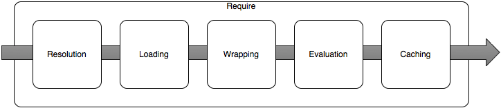

Модули в Node.js и TypeScript
- Введение
- Странности
- Зацикленные модули
- Манкипатчинг
- Typescript
Введение
ECMAScript Modules vs. CommonJS
CommonJS
// math-module.js
module.exports.add = (a, b) => a + b
const { add } = require('./math-module')
add(3, 7) // 10
Require

// index.js
const _ = require('lodash')
// index.js
const _ = require('lodash')
1. node ~/workspace/index.js
// index.js
const _ = require('lodash')
1. node ~/workspace/index.js
2. Paths [
'~/workspace/node_modules',
'~/node_modules',
'~/../node_modules',
'~/../../node_modules'
]
// index.js
const _ = require('lodash')
1. node ~/workspace/index.js
2. Paths [
'~/workspace/node_modules',
'~/node_modules',
'~/../node_modules',
'~/../../node_modules'
]
3. ~/workspace/node_modules/lodash/index.js
module.exports.add = (a, b) => a + b
В NodeJS выполняется как:
function (exports, require, module, __filename, __dirname) {
module.exports.add = (a, b) => a + b
}
delete require.cache['lodash']
Module
module.exports.add = (a, b) => a + b
console.log(module)
node ~/workspace/index.js
Module {
id: '.',
path: '~/workspace',
exports: { add: [Function (anonymous)] },
parent: null,
filename: '~/workspace/index.js',
loaded: false,
children: [],
paths: [
'~/workspace/node_modules',
'~/node_modules',
'~/../node_modules',
'~/../../node_modules'
]
}
Export
// math-module.js
module.exports = (a, b) => a - b
module.exports.add = (a, b) => a + b
// index.js
const math = require('./math-module')
math(5, 1) // 4
math.add(5, 1) // 6
// math-module.js
module.exports.add = (a, b) => a + b
module.exports = (a, b) => a - b
// index.js
const math = require('./math-module')
math(5, 1) // 4
math.add(5, 1) // error
// math-module.js
module.exports = 2
module.exports.add = (a, b) => a + b
// index.js
const math = require('./math-module')
math // 2
math.add(5, 1) // error
// math-module.js
exports.add = (a, b) => a + b
// index.js
const math = require('./math-module')
math.add(5, 1) // 6
ECMAScript
import _ from 'lodash'
- имя модуля
lodash, подключается entry point модуля указынный в package.json - явный путь к модулю
lodash/repeat.js - относительные пути к модулю
./ ../ - абсолютные пути
file:///opt/nodejs/config.js
// module.mjs
export default (a, b) => a - b
export const add = (a, b) => a + b
// index.mjs
import math, { add } from './module.mjs'
math(5, 1) // 4
add(5, 1) // 6
(async () => {
const module = await import(`lodash`)
console.log(module.default.capitalize('test')) // Test
})()
export / import
//index.mjs
export default 1
export const value = 3
export { sampleSize as randomItems } from 'lodash'
import m, { value, randomItems } from './index.mjs'
m // 1
value // 3
randomItems([1, 2, 3], 2) // [3, 1]
import * as result from './index.mjs'
result.default // 1
result.value // value3
result.randomItems([1, 2, 3], 2) // [3, 1]
Для активации необходимо:
- расширение .mjs (recommended)
- package.json
"type": "module" - flag
--input-type=module
.mjs всегда загружается как es модуль несмотря на package.json
Главные различия
- esm in use strict;
- для es6 расширения должны быть явно указаны, исключением являются сторонние и внутренние модули
- NODE_PATH - переменная которая указывает еще одно место для поиска модуля, в es недоступно, нужно использовать
symlinks - нет
require, exports, module.exports, __filename, __dirnameно можно импортировать из встроенных модулей - расположение import в коде не зависит от порядка загрузки в отличии от require
import { fileURLToPath } from 'url';
import { dirname } from 'path';
const __filename = fileURLToPath(import.meta.url);
const __dirname = dirname(__filename);
import { createRequire } from 'module';
const require = createRequire(import.meta.url);
// sibling-module.js is a CommonJS module.
const siblingModule = require('./sibling-module');
export default { a: 1 }
export const val = 3
const res = require('./index.mjs')
console.log(res)
// Must use import to load ES Module: /Users/renat/workspace/learning/workshop/modules/index.mjs
(async function() {
const res = await import('./index.mjs');
console.log(res);
})()
// { default: { a: 1 }, val: 3 }
// common.js
module.exports = {v: 1}
module.exports.add = (a, b) => a + b
// index.mjs
import res from './common.js'
OK
Cycles
// a.js
const ModuleB = require('./b')
function ModuleA() {}
ModuleA.hello = function () {
const b = new ModuleB()
console.log('hello! ' + b.name)
}
console.log('ModuleA')
module.exports = ModuleA
// b.js
const moduleA = require('./a')
function ModuleB() {
this.name = 'ModuleB'
}
ModuleB.hello = function () {
moduleA.hello()
}
const b = new ModuleB()
console.log(b.name) // ModuleB
module.exports = ModuleB
// index.js
const moduleB = require('./b')
moduleB.hello()
ModuleA
ModuleB
a.js:5
const b = new ModuleB()
^
TypeError: ModuleB is not a constructor
Solution
// a.js
const ModuleB = require('./b')
function ModuleA() {}
ModuleA.hello = function () {
const b = new ModuleB()
console.log('hello! ' + b.name)
}
console.log('ModuleA')
module.exports = ModuleA
// b.js
function ModuleB() {
this.name = 'ModuleB'
}
module.exports = ModuleB
const moduleA = require('./a')
ModuleB.hello = function () {
moduleA.hello()
}
const b = new ModuleB()
console.log(b.name)
ECMAScript
import ModuleB from './b.mjs'
function ModuleA() {}
ModuleA.hello = function () {
const b = new ModuleB()
console.log('hello! ' + b.name)
}
export default ModuleA
import moduleA from './a.mjs'
function ModuleB() {
this.name = 'ModuleB'
}
ModuleB.hello = function () {
moduleA.hello()
}
const b = new ModuleB()
console.log(b.name)
export default ModuleB
import moduleB from './b.mjs'
moduleB.hello()
Monkey patching
import _ from 'lodash'
import repeat from 'lodash/repeat.js'
const str = 'tools'
console.log(_.repeat(str, 2)) // toolstools
_.repeat = function(string, n, ...args) {
const separator = ':'
return repeat(string + separator, n, ...args).replace(new RegExp(separator + '$'), '')
}
console.log(_.repeat(str, 2)) // tools:tools
import _ from 'lodash'
import './index.js'
const str = 'tools'
console.log(_.repeat(str, 2)) // tools:tools
Модули в Typescript
// module.ts
export = (a, b) => a + b
// index.ts
import math = require('./module')
// module.ts
export const add = (a, b) => a + b
// index.ts
import { add } from './module'
Внешние модули
// math-module.js
module.exports.add = (a, b) => a + b
// index.d.ts
declare module "math-module" {
export function add(a: number, b: number): number
}
// declare module "math-module"
// index.ts
import { add } from '../math-module'
console.log(add(1, 2)) // 3
import { add as esAdd } from '../../math-module'
import add = require('../../math-module')
const { add: cAdd } = require('../../math-module')
console.log(add.add(1, 2)) // 3
console.log(esAdd(1, 2)) // 3
console.log(cAdd(1, 2)) // 3
Укороченные пути к модулям проекта в TypeScript
import { User } from '../../user/model' vs import { User } from 'user/model'
// tsconfig.json
{
"compilerOptions": {
"baseUrl": "src"
}
}